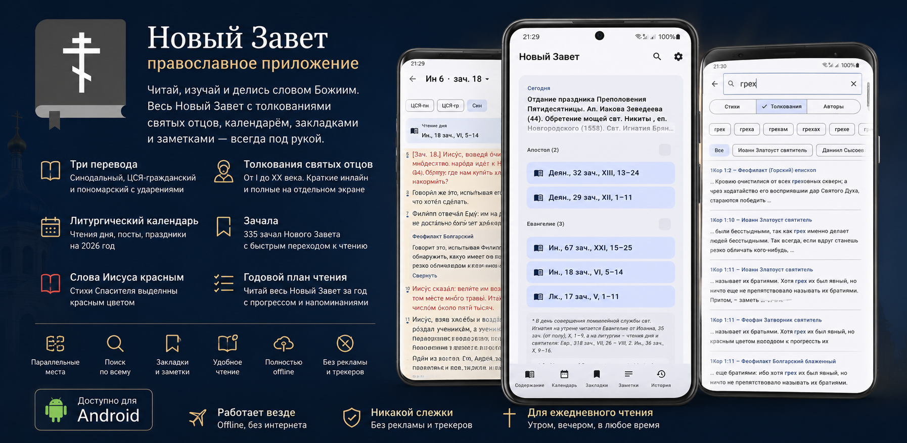
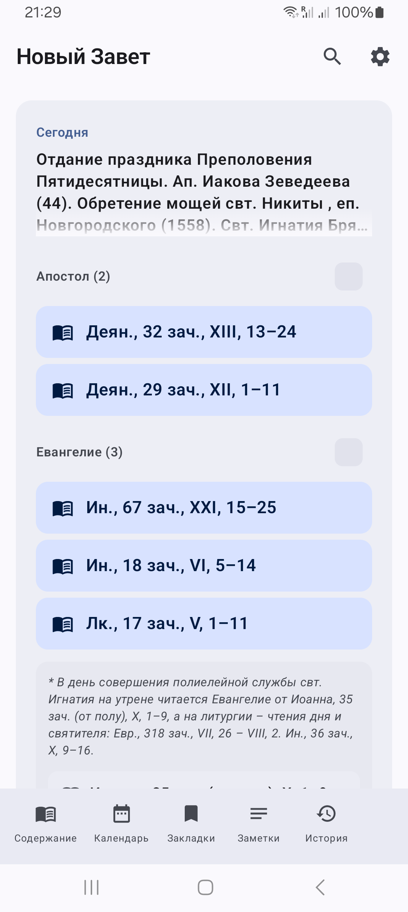
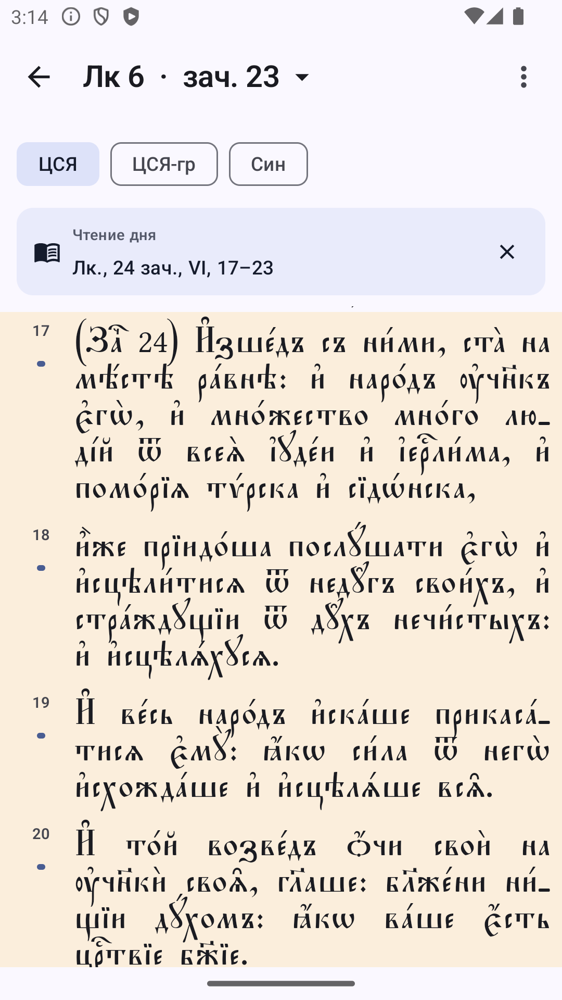
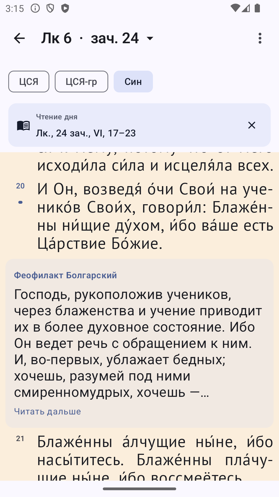
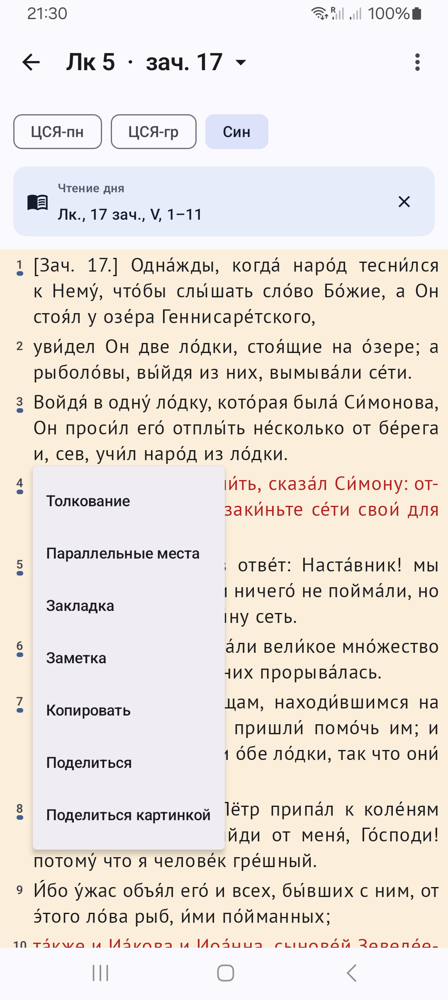
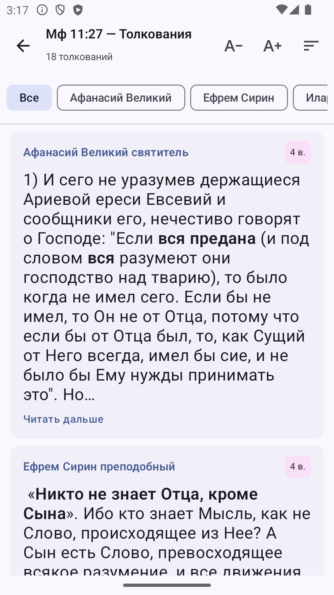
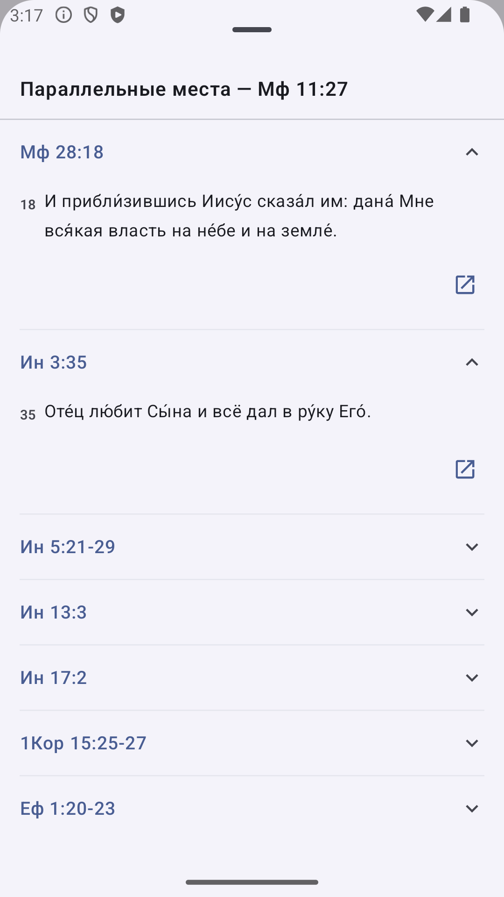
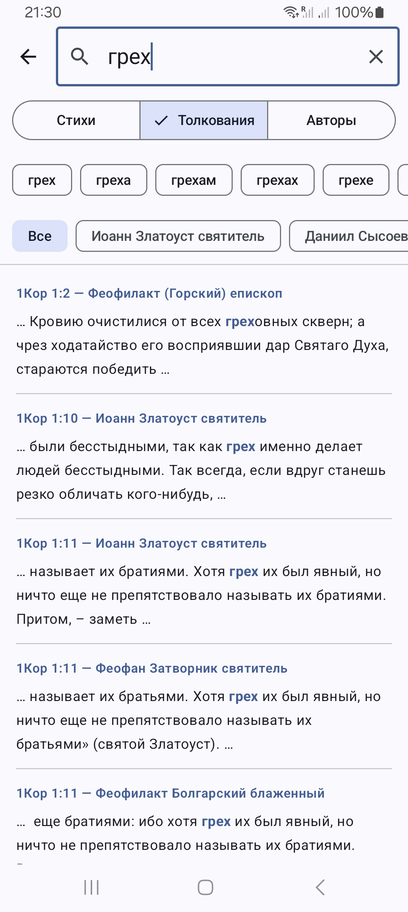
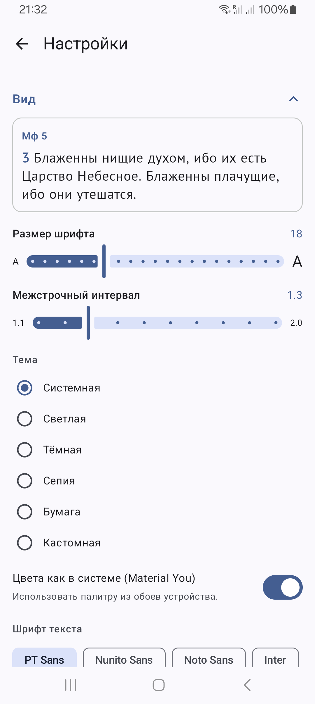

Скачать APKВерсия 0.1.0 · Android 7.0+ · полностью offline
Синодальный и церковнославянский гражданский — оба с ударениями (с azbyka.ru). Плюс ЦСЯ в традиционном пономарском начертании. Любой стих можно сразу увидеть в двух переводах параллельно.
Под каждым стихом — святоотеческое толкование от I до XX века: свт. Иоанн Златоуст, блж. Августин, прп. Ефрем Сирин, свт. Феофилакт Болгарский, свт. Афанасий Великий, А.П. Лопухин и другие. Краткое инлайн-толкование тапом на номер стиха, полные толкования отдельным экраном.
Чтения Апостола и Евангелия дня по церковному уставу на 2026 год — открытие одним касанием с подсветкой нужных стихов. Праздники, посты и памяти святых — на 2026–2099 годы.
Маркировка зачал прямо в тексте — «[Зач. 11.]» как в богослужебных книгах. Содержание в богослужебном режиме показывает все 335 зачал Нового Завета — тап открывает Reader на нужном стихе с подсветкой диапазона.
Стихи со словами Спасителя выделяются красным цветом (как в Red Letter Bible). Можно отключить в настройках.
Прочесть весь Новый Завет за год — приложение само предлагает дневную порцию и считает прогресс. Можно начать с любой даты и пропускать выходные.
Отдельные напоминания об Апостоле и Евангелии — в выбранное время утром и вечером. Тап по уведомлению открывает чтение дня.
К любому стиху можно добавить закладку или личную заметку с форматированием. Все данные — на устройстве, никакого облака.
Перекрёстные ссылки на схожие места в других книгах Писания (TSK — Treasury of Scripture Knowledge). Открываются bottom-sheet'ом без выхода из Reader.
Экран чтения делится на зоны: касание слева/справа листает главу, центра — полноэкранный режим. Удобно читать одной рукой. Включено по умолчанию, отключается в настройках.
Один поиск по всему: стихам трёх переводов, толкованиям святых отцов, именам авторов. SQLite FTS5 — мгновенно даже на 8 000 стихов и 30 000 толкований.
Шесть тем — светлая, тёмная, сепия, «бумага» молитвослова, динамическая Material You и кастомная палитра. Размер шрифта, межстрочный интервал, выравнивание по ширине, переносы по слогам ЦСЯ и русского.
Никаких разрешений на интернет — все 250 МБ Нового Завета, толкований и календаря лежат на устройстве. Работает в самолёте, монастыре, любом метро. Никакой телеметрии и трекеров.
Экран не гаснет пока открыт Reader. Слайдер яркости отдельно для чтения — можно выкрутить ниже системного минимума для ночного чтения, не меняя глобальной настройки.







